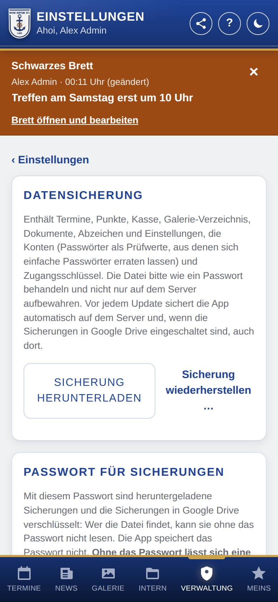

Datensicherung
Hier lädst du eine Sicherung aller Daten der App herunter, spielst eine Sicherung wieder ein, richtest ein Passwort für Sicherungen ein oder lässt die App jede Woche eine verschlüsselte Sicherung in Google Drive ablegen.

So öffnest du die Seite
Tippe unten auf Verwaltung, dann auf Einstellungen und auf Datensicherung.
Was du hier siehst
- Datensicherung: was die Sicherung enthält, mit den Knöpfen Sicherung herunterladen (mit geprüftem Passwort für Sicherungen: Sicherung verschlüsselt herunterladen; vor der ersten Prüfung unverschlüsselt, weil ein vertipptes Passwort die Sicherung unbrauchbar machte) und Sicherung wiederherstellen ….
- Passwort für Sicherungen: ob eines eingerichtet ist, mit Fingerabdruck und den Knöpfen Passwort prüfen, Ändern und Entfernen.
- Sicherungen in Google Drive: der Schalter Wöchentlich in Google Drive sichern, darunter wann zuletzt gesichert wurde, Ordner öffnen und Jetzt in Google Drive sichern. Fehlt die nötige Verbindung zu Google, steht hier stattdessen, was zu tun ist.
So gehst du vor
Ein Passwort für Sicherungen einrichten
Mit diesem Passwort sind heruntergeladene Sicherungen und alle Sicherungen in Google Drive verschlüsselt: Wer die Datei findet, kann ohne das Passwort nichts darin lesen.
- Überlege dir ein langes Passwort (mindestens 12 Zeichen, gern ein Satz) und bewahre es sicher auf, z. B. im Passwort-Manager oder ausgedruckt im Tresor der Kompanie.
- Trage es unter Passwort für Sicherungen zweimal ein, setze das Häkchen Ich habe das Passwort sicher aufbewahrt und tippe auf Passwort einrichten.
- Prüfe gleich danach und ab und zu mit Passwort prüfen, ob ihr es noch habt. Erst nach der ersten richtigen Prüfung (oder einer Wiederherstellung mit diesem Passwort) löscht die App in Google Drive ältere, unverschlüsselte Sicherungen; die mit einem früheren Passwort wechseln dann wie die übrigen durch.
Wichtig: Die App speichert das Passwort nicht. Ist es verloren, lässt sich keine verschlüsselte Sicherung mehr wiederherstellen, auch nicht von den Betreuern der App. Ein neues Passwort gilt nur für neue Sicherungen; ältere brauchen weiter das bisherige.
Eine Sicherung herunterladen
- Tippe auf Sicherung herunterladen bzw. Sicherung verschlüsselt herunterladen.
- Der Browser speichert eine Datei
sicherung-<Datum>.json(verschlüsselt:sicherung-<Datum>.json.enc). Bewahre sie an einem sicheren Ort auf, nicht nur auf dem Server.
Sicherungen in Google Drive einschalten
- Verbinde die App unter Google-Zugang über Mit Google verbinden und setze dabei das Häkchen für eigene Dateien in Google Drive (siehe Google-Zugang).
- Empfohlen: Richte ein Passwort für Sicherungen ein (siehe oben). Dann gehen die Sicherungen verschlüsselt nach Google Drive; ohne Passwort unverschlüsselt (lesbar für jeden, der den Ordner öffnen kann).
- Schalte hier Wöchentlich in Google Drive sichern ein.
- Willst du gleich eine Sicherung haben, tippe auf Jetzt in Google Drive sichern.
Eine Sicherung wiederherstellen
- Tippe auf Sicherung wiederherstellen ….
- Wähle die Sicherungsdatei. Liegt sie in Google Drive, lädst du sie vorher von dort herunter.
- Bestätige die Rückfrage. Ist die Sicherung verschlüsselt, gib das Passwort für Sicherungen ein, das beim Erstellen der Sicherung galt, und tippe auf Wiederherstellen.
- Die Sicherung ersetzt alle Daten der App; danach lädt die App neu.
Gut zu wissen
- Inhalt: Die Sicherung enthält alle Daten der App, die Einstellungen, die Zugangsschlüssel und die Konten (Passwörter nur als Prüfwerte), dazu die Dateien der Dokumente, die Abzeichen der Dienstgrade und die Anmeldungen der Geräte für Benachrichtigungen. Mit WordPress sind alle Benutzer der Webseite dabei. Behandle eine unverschlüsselte Datei wie ein Passwort.
- Verschlüsselung: Das Passwort für Sicherungen gehört zu dieser Installation und kommt nicht mit einer Sicherung zurück. Nach einem Umzug auf einen neuen Server richtest du es dort neu ein. Die Sicherungen vor Updates auf dem Server bleiben unverschlüsselt: Sie liegen neben der Datenbank, und ein Wiederherstellen soll auch ohne Passwort möglich sein.
- Nicht enthalten: die Fotos der Galerie (die App holt sie danach neu aus Google Drive; bei vielen Fotos dauert das einige Stunden), wartende Fehlermeldungen und der Zustand dieser Installation (z. B. Update-Stand, Fehlerprotokoll). Mit WordPress gehören Beiträge, Seiten, Design und andere Plugins zu WordPress selbst; dafür braucht es eine Sicherung von WordPress bzw. vom Hoster.
- Automatische Sicherungen vor Updates: Vor jedem Update sichert die App auf dem Server. Diese Sicherungen sind mit dem Server verloren; sind die Sicherungen in Google Drive eingeschaltet, kommt jede davon zusätzlich in den Ordner dort (die letzten fünf; mit Passwort für Sicherungen verschlüsselt als
vor-update-<Datum>-<Kennung des Passworts>-<Version>.json.enc, sonst alsvor-update-<Datum>-<Version>.json). Klappt das nicht, fragt die App vor dem Update nach (siehe Zustand und Updates). Ohne Google Drive die Sicherungen deshalb auch herunterladen. Die Ampel unter Zustand und Updates wird gelb, wenn 30 Tage lang keine Sicherung heruntergeladen oder in Google Drive abgelegt wurde. - Google Drive: Die App legt im verbundenen Google-Konto einen eigenen Ordner an, lädt einmal pro Woche eine Sicherung hoch und behält die letzten acht; eine Sicherung vor einem Update zählt dabei als die der Woche. Sie sieht und ändert dort nur Dateien, die sie selbst angelegt hat. Scheitert das Hochladen (z. B. weil der Speicher voll ist), steht der Grund hier und in der Ampel; die App versucht es am nächsten Tag wieder. Mit einem Dienstkonto geht das nicht. Ohne Passwort für Sicherungen lädt die App sie unverschlüsselt hoch (
.json), mit Passwort verschlüsselt (.json.enc). Ältere, unverschlüsselte Sicherungen im Ordner löscht die App, sobald die erste verschlüsselte dort liegt und das Passwort einmal mit Passwort prüfen bestätigt ist; bis dahin behält sie auch verschlüsselte Sicherungen mit einem früheren Passwort. Gib den Ordner trotzdem nicht frei. - Wiederherstellen ohne WordPress: geht auch auf einer neuen Installation, z. B. beim Umzug, aber nicht aus einer Sicherung der WordPress-Version. Danach melden sich alle neu an.
- Wiederherstellen mit WordPress: geht nur auf derselben Webseite (Adresse). Fehlende Konten legt die App dabei mit ihrer bisherigen Nummer wieder an; alle melden sich mit ihrem bisherigen Benutzernamen und Passwort an. Vorhandene Konten behalten Anmeldedaten und E-Mail und bekommen nur ihre Rolle in der App aus der Sicherung. Gehört eine Konto-Nummer aus der Sicherung inzwischen jemand anderem, bricht das Wiederherstellen ab und nennt das Konto; geändert wird dann nichts.
- Eine Sicherung aus einer neueren Version lässt sich erst einspielen, wenn die App aktualisiert ist. Rückgängig machen lässt sich ein Wiederherstellen nur mit einer anderen Sicherung.
Nach dem Verlust der Webseite (WordPress)
- Installiere WordPress unter derselben Adresse neu. Lege den Administrator mit Benutzername und E-Mail deines bisherigen Kontos an (oder mit einem Namen und einer E-Mail, die es bisher nicht gab).
- Installiere das Plugin der Kompanie und öffne die App.
- Spiele unter Einstellungen → Datensicherung die neueste Sicherung ein.